Un perfil es una manera que tiene Oracle de limitarle el uso de recursos a los usuarios.
Hay dos tipos de perfiles:
- De recursos del sistema / base de datos: Limitar el uso de la CPU, tiempo de conexión, tiempo de inactividad, sesiones concurrentes, espacio consumido en la SGA, espacio de I/O, etc.
- De las cuentas y password del usuario: bloqueo de cuentas, expiración del password, periodo de gracia, histórico de password para evitar reutilizar passwords, gestión de complejidad del password, etc.
Es importante mencionar que cada usuario solo puede tener asignado un perfil. Y, además, cuando este perfil es cambiado, tiene efecto sobre los usuarios conectados cuando éstos se desconecten y se vuelvan a conectar.
Existe un perfil llamado DEFAULT que es el asignado inicialmente, por default, a todos los usuarios.
Por defecto, la gestión de perfiles están desactivados. Esto debido a que controlarle los perfiles a los usuarios consume recursos del sistema. Para poder activar la gestión de perfiles, el parámetro RESOURCE_LIMIT debe estar en TRUE.
Parámetros de tipo KERNEL / del Sistema
A continuación se presentan algunos de los parámetros de tipo kernel más usados.
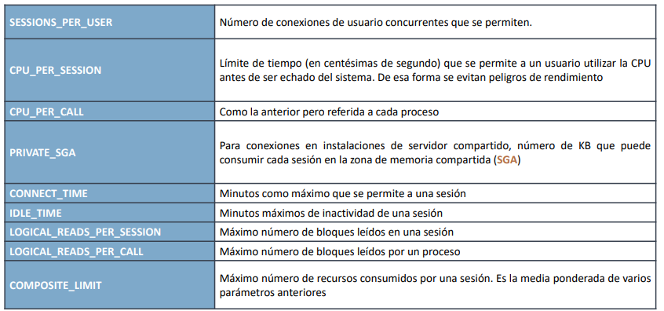
Parámetros de tipo Password
En la siguiente tabla se presentan algunos parámetros de tipo password que pueden ser configurados.
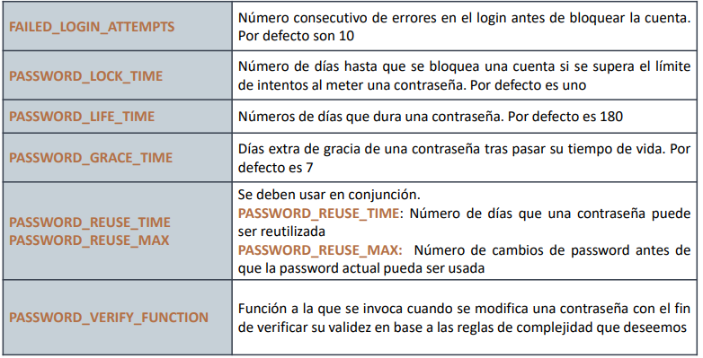
Perfil DEFAULT
Si queremos consultar la información de un perfil específico, podemos usar la vista DBA_PROFILES. En la imagen se puede observar que hay dos tipos de "perfiles" (RESOURCE_TYPE): KERNEL y PASSWORD. El valor actual de dicho parámetro está en la columna LIMIT. Los parámetros de recursos del sistema están UNLIMITED, mientras que los de password tienen algunos valores. Por ejemplo, FAILE_LOGIN_ATTEMPS está en 10, lo cual significa que el usuario se puede equivocar al digitar su password hasta 10 veces, antes de que su cuenta sea bloqueada.
Consultando la vista V$SYSTEM_PARAMETER, puedo mirar si los perfiles están activados o no. Si queremos activar / desactivar la gestión de perfiles, podemos ejecutar el comando ALTER SYSTEM SET resource_limit = FALSE / TRUE.
| 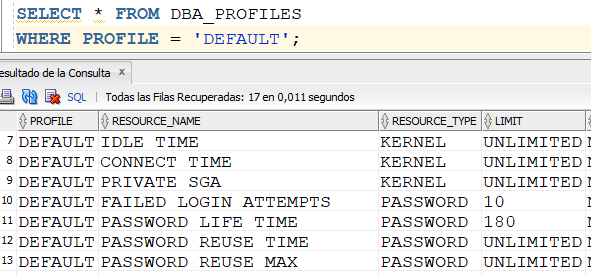 | 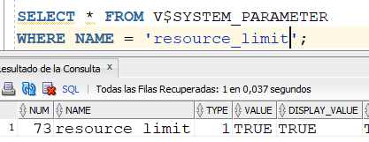 |
Cómo crear un perfil?
Se crea con la instrucción CREATE PROFILE LIMIT, tal y como se ve a continuación. Se está creando un perfil llamado DESARROLLO, el cual tiene tres parámetros configurados. En este caso, el perfil DESARROLLO tiene configurados esos tres parámetros con esos valores, y los demás valores quedan configurados con el valor por default.
Si miramos la vista DBA_PROFILES, vemos lo que se explicó anteriormente.
| 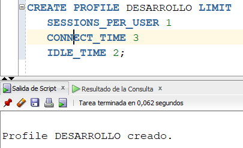 | 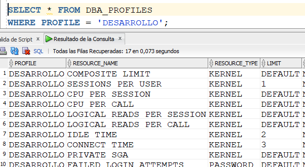 |
Si en algún momento necesito adicionarle a un perfil ya existente la configuración de otro parámetro, lo hago con ALTER PROFILE LIMIT. Por ejemplo:
| 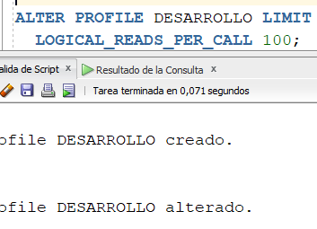 | 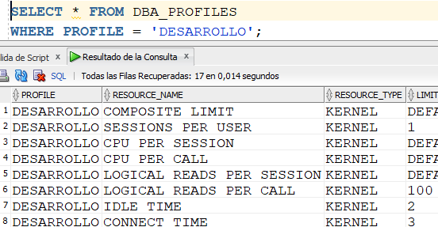 |
Funcionamiento de los límites de un perfil
Vamos a crear un nuevo usuario llamado DESA2, le vamos a asignar los roles CONNECT y RESOURCE. Para mirar qué perfil tiene asignado un usuario, podemos consultar la vista DBA_USERS. Podemos observar que su perfil es el DEFAULT.
| 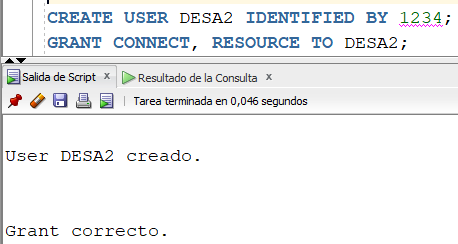 | 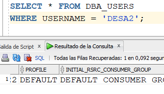 |
Para asignarle a un usuario un perfil diferente al DEFAULT, digitamos un ALTER USER. Le asignamos a DESA2 el perfil DESARROLLO, creado anteriormente. Y podemos observar que, efectivamente, dicho usuario queda con ese perfil.
| 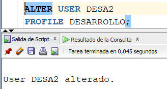 | 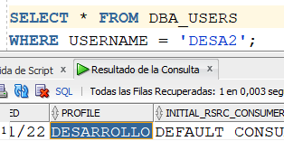 |
Hagamos una prueba para mirar qué significa, por ejemplo, que el parámetro SESSIONS_PER_USER esté con valor de 1 en el perfil DESARROLLO.
Vamos, por SQL Plus, a conectarnos con el usuario DESA2. NO genera problemas. Luego, en una segunda pantalla, trato de volverme a conectar con el mismo usuario, y aparece el error de que no se puede conectar a dos sesiones diferentes, el máximo número de sesiones concurrentes que puede tener el usuario es 1.
| 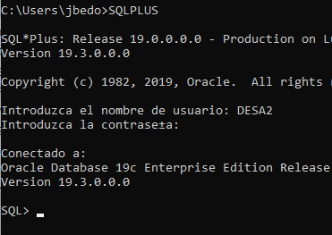 |
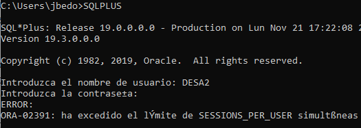 |
Si me vuelvo a pasar para la ventana donde me dejó conectar con DESA2 (y luego de esperar más de 3 minutos), y ejecuto cualquier SELECT, genera un error de tiempo de inactividad. En el perfil DESARROLLO hay un parámetro llamado CONNECT_TIME que está en 3. Esto significa que el usuario DESA2 puede estar máximo conectado 3 minutos.
| 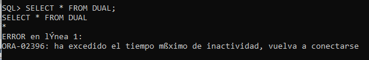 | 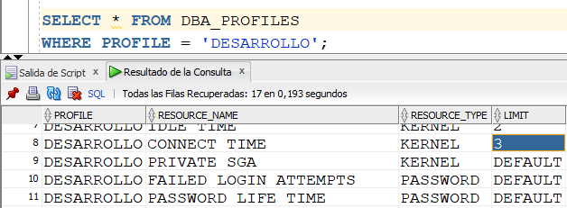 |
Ahora vamos a hacer un ensayo con un parámetro de tipo PASSWORD. Vamos a adicionarle al perfil DESARROLLO un nuevo parámetro. El parámetro corresponde al número máximo de equivocaciones que se pueden cometer al digitar el password, antes de que Oracle bloquee la cuenta.
| 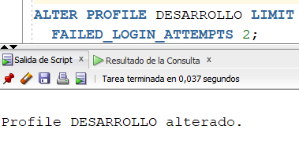 | 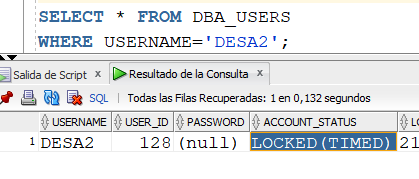 |
Cuando tratamos de conectarnos con el usuario DESA2 y nos equivocamos 3 veces al digitar el password, el mensaje que aparece es que la cuenta ha sido bloqueada. Esto debido a que el parametro FAILED_LOGIN_ATTEMPTS estaba en dos.
Si miramos el estado de la cuenta o usuario DESA2, a través de DBA_USERS, vemos que dicha cuenta se encuentra en estado LOCKED (TIMED). TIMED corresponde a que el la cuenta ha quedado bloqueada y está sujeta al tiempo que diga el parámetro PASSWORD_LOCK_TIME.
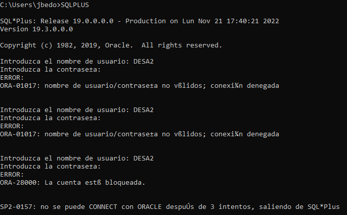
Ahora, si desde SYS desbloqueamos la cuenta, vemos como el estado cambia a OPEN.
| 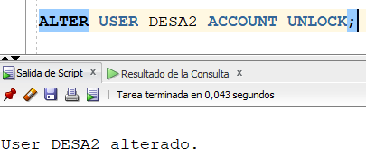 | 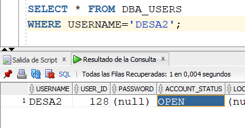 |
Miremos un ejemplo con PASSWORD_LIFE_TIME. Consultemos el EXPIRY_DATE de l a cuenta DESA2. Vamos que está para expirar el 20 de mayo de 2023 (en el momento de escribir estas líneas es 21 de noviembre de 2022). Ahora, cambiemos el parámetro a 30. Cuando volvemos a consultar el EXPIRY_DATE del usuario DESA2, ya está en 21 de diciembre de 2022, 30 días despues de hoy.
| 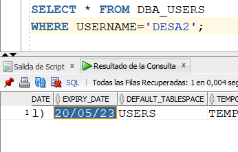 | 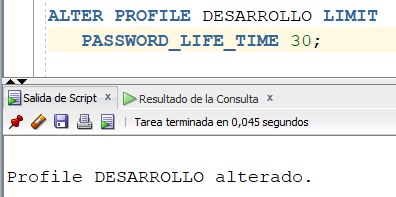 | 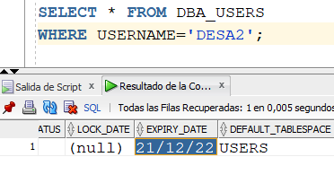 |
Cómo borrar un perfil?
Para borrar un perfil, sucede lo mismo que al borrar un usuario. Miremos el ejemplo de borrar el perfil DESARROLLO.
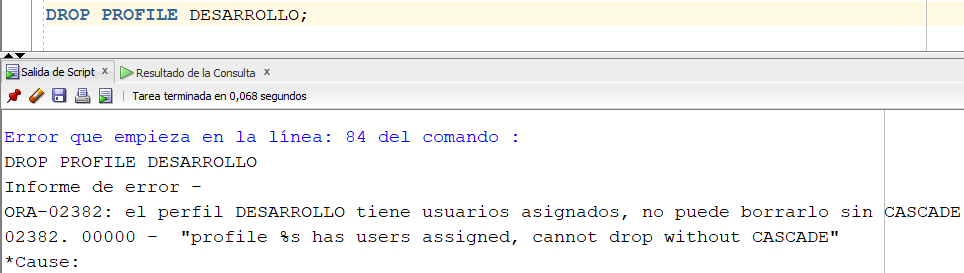
Se puede observar que no deja borrar dicho perfil porque tiene usuarios asignados, a no ser que lo hagamos con la cláusula CASCADE. Si volvemos a mirar con qué perfil quedó el usuario DESA2, vemos que queda con el DEFAULT.
| 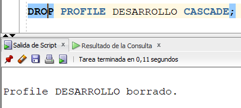 | 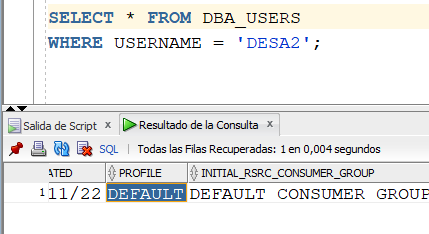 |
Qué sucede si tratamos de borrar el perfil DEFAULT? No lo deja borrar ya que es un perfil predefinido por Oracle, está protegido.
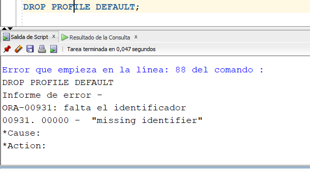
Por último, debemos recordar que los perfiles son como los roles. Si hay algún cambio en un perfil, para que los usuarios "tomen" dicho cambio deben conectarse a una nueva sesión (salir y volver a entrar).
Videos: